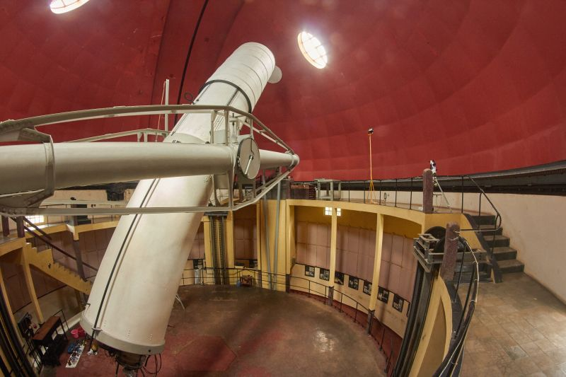
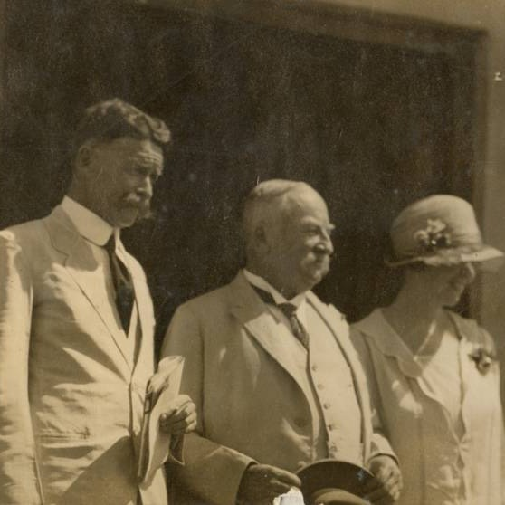

Instrumen & Dokumentasi Astronomi
Pelajari tentang instrumen dan dokumentasi astronomi yang digunakan di Observatorium Bosscha.
Lihat Koleksi->
Jelajahi koleksi digital astronomi yang berisi dokumentasi teleskop, pelat kaca, terbitan ilmiah, serta sejarah dan tokoh observatorium.

Pelajari tentang instrumen dan dokumentasi astronomi yang digunakan di Observatorium Bosscha.
Lihat Koleksi->
Jelajahi koleksi digitalisasi pelat kaca yang digunakan untuk astrofotografi di Observatorium Bosscha.
Lihat Koleksi->
Temukan terbitan ilmiah dan dokumen edukasi publik yang tersedia dalam arsip digital.
Lihat Koleksi->
Telusuri dokumentasi sejarah dan tokoh terkait Observatorium Bosscha melalui foto dan teks.
Lihat Koleksi->Observatorium Bosscha terletak di Lembang, Jawa Barat, Indonesia. Berikut adalah peta lokasi:
Observatorium Bosscha buka untuk kunjungan umum pada hari Senin hingga Jumat, pukul 09.00 - 16.00 WIB.